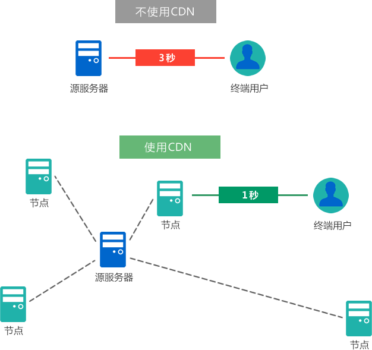

CDN加速是什么？它是如何工作的？
作为一个开发或者运维人员，你经常会看到 CDN 这个名词。CDN 是 Content Delivery Network 的缩写，译为“内容分发网络”。CDN 的好处有很多，包括：
这篇文章除了会讲解 CDN 的概念，还会告诉你 CDN 的工作原理。作为一个十年的老站长，我一直在使用 CDN，我将从实践的角度教你如何架构网站，以让网站更加适应于 CDN。
创作这篇文章，我参阅了大量的中英文资料，相信你一定会有所收获。OK，那就让我们开始吧。
每个节点用来服务它周围的用户，因为距离近，所以响应时间短。另外，节点是由很多服务器构成的集群，所以能够抗住巨大流量。
不使用 CDN 的话，用户的每次请求都会到达你的源服务器。用户和源服务器之间的距离越远，数据包转发的次数就越多，等待页面加载的时间就越长。另外，数据包的每次转发都有可能受到网络拥堵的影响，进一步延迟网页加载时间。
访问境外网站时，距离远，网络拥堵，用户往往需要等待 3 秒以上，这是无法忍受的。
如果你的网站使用了 CDN 加速，当用户请求你的网站时，CDN 会找到离用户最近的节点，看看这个节点中是否缓存了用户想要的内容：
只有在用户第一次请求内容时，节点才会访问源服务器，以后用户（包括新用户和老用户）再去请求相同内容，因为节点已经缓存了，所以会直接发送给用户，不会再去访问源服务器，此时源服务器就被“屏蔽”了，它不会知道有用户请求内容。
现在全球有超过一半的流量由 CDN 提供，而且这个比例还在迅速上升。不使用 CDN，你很难把页面响应时间控制在 1 秒以内，让用户等待超过 1 秒的时间是非常不舒服的。
下图演示了使用 CDN 和不使用 CDN 的两种网络结构：
现在我们再来看看“内容分发网络”这个术语，它实际上包含了 3 方面的内容：
总起来说，CDN 是机构搭建的一种私有网络，它能将用户部署在源服务器上的内容分发到各个节点，从而提高网站的响应速度。用户和站长都不需要知道 CDN 的内部拓扑结构，却能享受 CDN 带来的好处。
CDN 的原理虽然非常简单，但是它的内部架构其实非常复杂，涉及多级缓存、负载均衡、大数据处理、分布式存储、健康监控、热插拔等众多科研难题。在市场力量的推动下，CDN 经过 20 年的发展才把成本降下来，让中小站长也用得起。
另外，CDN 网络一般自带防火墙或者安全措施，即使黑客尝试粗暴的 DDoS 攻击也压垮不了网站，CDN 会检测出这种攻击，屏蔽可疑 IP。即使不屏蔽 IP，凭借 CDN 网络的大集群和均衡负载能力，DDoS 流量也压垮不了 CDN。
使用了 CDN 的话，你可以将服务器的配置降到很低，反正有 CDN 呢，什么都不怕。
另外，CDN 一般都可以按量付费，你消耗多少流量就支付多少费用。你可以将带宽设置到最大，既保证了访问速度，又不用多花一分钱。
黑客攻击是致命的，他们让你的网站崩溃，你却找不到原因，手足无措。不稳定的网站，经常遭受攻击的网站，不但让用户烦躁，也不受搜索引擎的待见。持续受到攻击的网站，流量一定会降低。
绝不要让黑客攻击你的网站，否则我保证你会受不了。
很多小公司或者个人站长都没有能力保证网站安全，裸奔的服务器分分钟被拿下。为了免受黑客攻击，请你一定要使用 CDN。CDN 屏蔽了你的服务器，让黑客不容易找到源头。
CDN 还能帮你抵御粗暴的 DDoS 攻击，不使用 CDN 的话，DDoS 攻击基本是无解的。
一般来说，架构适用于 CDN 的网站主要有两大原则：
静态内容指的是不随用户行为而改变的内容，比如文章、商品介绍等，不管用户是否登录，这些内容都是一样的。动态内容则反之，它随着用户的行为而改变，比如用户信息、留言列表、收藏按钮等。
一个页面往往会混合静态内容和动态内容，我们可以页面中使用 JavaScript 来加载动态内容。
为了降低请求次数，同时提高 SEO 效果，可以将用户评论、点击量、点赞量等看做静态内容，只要定期或者按照规则刷新 CDN 缓存即可。
既然使用了不同的服务器，也应该为静态内容和动态内容设置不同的域名。
由于网站模板更改、内容变动、用户评论、放置广告等诸多原因，静态内容需要经常更新，这个时候就需要刷新 CDN 缓存。我们通常可以针对一个 URL、一个目录、一个域名刷新 CDN 缓存。
尤其是针对一个域名刷新 CDN 缓存的时候，如果资源文件和静态内容位于同一个域名下，那么所有资源文件的缓存也会被刷新。资源文件的体积往往是静态内容的数倍，刷新资源文件不但会消耗很多流量，还会给源服务器带来不小的压力。
如果你为了提高 SEO 效果，将用户评论、点击量、收藏量等看做静态内容，那你就需要经常刷新域名下的所有静态内容，此时资源文件也会一并刷新。
为了避免资源文件被连带刷新，我非常建议为资源文件设置一个新的域名，该域名下只存储资源文件。但是，为资源文件启用新域名会增加开发成本，请读者自己权衡。
国内知名的云服务商有阿里云、腾讯云、华为云，国际知名的云服务商有亚马逊 AWS、微软 Azure，它们都提供了非常优秀的 CDN 服务。
- 极大提高网站访问速度
- 极大降低服务器压力
- 让全国/全球用户都能访问你的网站
- 隐藏真实的服务器
- 避免网站服务器遭受黑客攻击
- 防盗链
- 降低网络带宽成本
- 负载均衡，流量低谷不浪费资源，流量高峰轻松应对
这篇文章除了会讲解 CDN 的概念，还会告诉你 CDN 的工作原理。作为一个十年的老站长，我一直在使用 CDN，我将从实践的角度教你如何架构网站，以让网站更加适应于 CDN。
创作这篇文章，我参阅了大量的中英文资料，相信你一定会有所收获。OK，那就让我们开始吧。
什么是 CDN？
CDN 是一种用来分发内容的网络拓扑结构，在彻底搞明白它之前，我们需要先来理解另外两个名词。1) 节点
让用户使用 CDN 网络之前，CDN 提供商会在全国/全球部署多个节点。这里的节点可以看做机房，或者服务器集群，专业的称呼是 PoP（Point-of-Presence，入网点）或者边缘服务器（Origin Server）。每个节点用来服务它周围的用户，因为距离近，所以响应时间短。另外，节点是由很多服务器构成的集群，所以能够抗住巨大流量。
2) 源服务器
源服务器就是你部署网站的服务器，它为整个 CDN 网络提供初始内容。不使用 CDN 的话，用户的每次请求都会到达你的源服务器。用户和源服务器之间的距离越远，数据包转发的次数就越多，等待页面加载的时间就越长。另外，数据包的每次转发都有可能受到网络拥堵的影响，进一步延迟网页加载时间。
访问境外网站时，距离远，网络拥堵，用户往往需要等待 3 秒以上，这是无法忍受的。
网站的每一秒都非常重要！研究表明，1 秒钟的延迟会导致转化率下降 7%，页面浏览量下降 11%，客户满意度下降 16%。
好了，现在让我们看看使用了 CDN 以后的网络请求流程是什么样的。如果你的网站使用了 CDN 加速，当用户请求你的网站时，CDN 会找到离用户最近的节点，看看这个节点中是否缓存了用户想要的内容：
- 如果节点缓存了用户想要的内容，就直接发送给用户，不用再去请求源服务器；
- 如果节点没有缓存用户想要的内容，那么节点会自动请求源服务器获取想要的内容，然后再发送给用户；同时，节点也会把从源服务器获取的内容缓存起来，下次有用户再请求相同内容时，节点会直接发送给用户，而不用再去请求源服务器。
只有在用户第一次请求内容时，节点才会访问源服务器，以后用户（包括新用户和老用户）再去请求相同内容，因为节点已经缓存了，所以会直接发送给用户，不会再去访问源服务器，此时源服务器就被“屏蔽”了，它不会知道有用户请求内容。
页面从源服务器拉取内容的过程，专业术语叫做反向代理（Reverse Proxy），Nginx 就是一个著名的反向代理服务器。
向离你最近的服务器集群请求内容，这个速度是极快的，通常是秒级响应。C语言中文网和魏雪原两个网站都使用了阿里云的 CDN，你看它的响应速度多快。现在全球有超过一半的流量由 CDN 提供，而且这个比例还在迅速上升。不使用 CDN，你很难把页面响应时间控制在 1 秒以内，让用户等待超过 1 秒的时间是非常不舒服的。
下图演示了使用 CDN 和不使用 CDN 的两种网络结构：

现在我们再来看看“内容分发网络”这个术语，它实际上包含了 3 方面的内容：
1) 内容
CDN 是用来处理内容的。什么内容？和网站有关的内容，这包括动态/静态网页、CSS、JavaScript、图像、视频、音频、可下载的文件等。2) 分发
CDN 会将内容分发到节点。如何分发？节点需要内容时自动从源服务器拉取，也即反向代理。3) 网络
从 CDN 内部看，CDN 是一种网络拓扑结构，或者说是一种私有网络/局域网。用户只和节点交换数据，并不知道 CDN 的内部网络结构，只有搭建 CDN 的机构才知道。总起来说，CDN 是机构搭建的一种私有网络，它能将用户部署在源服务器上的内容分发到各个节点，从而提高网站的响应速度。用户和站长都不需要知道 CDN 的内部拓扑结构，却能享受 CDN 带来的好处。
CDN 的原理虽然非常简单，但是它的内部架构其实非常复杂，涉及多级缓存、负载均衡、大数据处理、分布式存储、健康监控、热插拔等众多科研难题。在市场力量的推动下，CDN 经过 20 年的发展才把成本降下来，让中小站长也用得起。
使用 CDN 的好处
使用 CDN 的好处太多了，而且成本极低，甚至还能省钱，站长没有理由不使用 CDN。不使用 CDN，网站响应时间长，SEO 效果差。接下来，我们罗列一下 CDN 的好处。1) 提高网站访问速度
这是 CDN 的初衷，也是 CDN 的主要作用，其原理我们已经在上面介绍了。CDN 能够极大或者成倍地提高网站访问速度，由于是距离源服务器较远的用户，感受更加明显。2) 降低服务器压力
几乎 80% 以上的访问量都被边缘节点承接了，只有内容更新或者缓存到期时才需要访问源服务器，这样源服务器的压力就会小很多，廉价的配置就能撑起巨大的流量。3) 让全国/全球用户访问网站
CDN 节点遍布全国/全球，境外用户或者偏远地区用户也能访问你的网站。不使用 CDN 的话，有些地区可能因为网络原因无法访问你的网站。4) 提高服务器安全性
用户请求先达到 CDN 网络最外层，用户不知道源服务器在哪里，源服务器的位置被 CDN 网络屏蔽了。不知道源服务器的位置，就无法攻击。另外，CDN 网络一般自带防火墙或者安全措施，即使黑客尝试粗暴的 DDoS 攻击也压垮不了网站，CDN 会检测出这种攻击，屏蔽可疑 IP。即使不屏蔽 IP，凭借 CDN 网络的大集群和均衡负载能力，DDoS 流量也压垮不了 CDN。
5) 负载均衡
CDN 自带负载均衡功能，你不用担心突如其来的峰值流量，CDN 能够轻松应对，而你的源服务器不会感受到压力。6) 7*24 小时服务
CDN 已经缓存了网站内容，即使源服务器挂掉，用户也能够访问网站。但是据我实测，即使使用了 CDN，阿里云也要求源服务器也必须正常工作，否则用户将不能访问网站，不太清楚这是什么迷之操作。
7) 减少开支
为了应对流量峰值，你必须租用配置强大的服务器，购买足够的带宽，这是一笔不小的开支。大部分情况下，服务器的配置都是过剩的，你需要为应对极限场景多支出数倍。使用了 CDN 的话，你可以将服务器的配置降到很低，反正有 CDN 呢，什么都不怕。
另外，CDN 一般都可以按量付费，你消耗多少流量就支付多少费用。你可以将带宽设置到最大，既保证了访问速度，又不用多花一分钱。
8) 降低运维成本
相信我，黑客攻击会放倒大多数网站，尤其是不懂安全的小公司或者个人站长。黑客攻击是致命的，他们让你的网站崩溃，你却找不到原因，手足无措。不稳定的网站，经常遭受攻击的网站，不但让用户烦躁，也不受搜索引擎的待见。持续受到攻击的网站，流量一定会降低。
绝不要让黑客攻击你的网站，否则我保证你会受不了。
很多小公司或者个人站长都没有能力保证网站安全，裸奔的服务器分分钟被拿下。为了免受黑客攻击，请你一定要使用 CDN。CDN 屏蔽了你的服务器，让黑客不容易找到源头。
CDN 还能帮你抵御粗暴的 DDoS 攻击，不使用 CDN 的话，DDoS 攻击基本是无解的。
如何架构网站
合理的架构让网站更适应于 CDN，降低成本的同时，也提高了安全性。如果你的网站在开发之初没有考虑使用 CDN，那你可能需要一些调整。一般来说，架构适用于 CDN 的网站主要有两大原则：
1) 动静分离
将网站的静态内容和动态内容分离。静态内容指的是不随用户行为而改变的内容，比如文章、商品介绍等，不管用户是否登录，这些内容都是一样的。动态内容则反之，它随着用户的行为而改变，比如用户信息、留言列表、收藏按钮等。
一个页面往往会混合静态内容和动态内容，我们可以页面中使用 JavaScript 来加载动态内容。
为了降低请求次数，同时提高 SEO 效果，可以将用户评论、点击量、点赞量等看做静态内容，只要定期或者按照规则刷新 CDN 缓存即可。
CDN 缓存可以设置失效时间，也可以主动刷新，一般的 CDN 都支持手动刷新或者 API 刷新（编程刷新）。
另外为了安全，最好准备两台服务器，一台放置静态内容并启用 CDN，一台放置动态内容不启用 CDN。放置动态内容的服务器更容易遭受攻击，即使动态内容服务器挂掉，也不影响静态内容的访问。既然使用了不同的服务器，也应该为静态内容和动态内容设置不同的域名。
2) 资源文件分离
资源文件是指那些内容几乎不会变动的文件，比如图片、视频、压缩包等。由于网站模板更改、内容变动、用户评论、放置广告等诸多原因，静态内容需要经常更新，这个时候就需要刷新 CDN 缓存。我们通常可以针对一个 URL、一个目录、一个域名刷新 CDN 缓存。
尤其是针对一个域名刷新 CDN 缓存的时候，如果资源文件和静态内容位于同一个域名下，那么所有资源文件的缓存也会被刷新。资源文件的体积往往是静态内容的数倍，刷新资源文件不但会消耗很多流量，还会给源服务器带来不小的压力。
如果你为了提高 SEO 效果，将用户评论、点击量、收藏量等看做静态内容，那你就需要经常刷新域名下的所有静态内容，此时资源文件也会一并刷新。
为了避免资源文件被连带刷新，我非常建议为资源文件设置一个新的域名，该域名下只存储资源文件。但是，为资源文件启用新域名会增加开发成本，请读者自己权衡。
总结
本文讲解了 CDN 的概念、工作原理、优势以及网站架构，如果你的网站是基于内容的（比如文章站、视频站、电商站），我相信你没有理由不使用 CDN。国内知名的云服务商有阿里云、腾讯云、华为云，国际知名的云服务商有亚马逊 AWS、微软 Azure，它们都提供了非常优秀的 CDN 服务。
关注公众号「站长严长生」，在手机上阅读所有教程，随时随地都能学习。内含一款搜索神器，免费下载全网书籍和视频。

微信扫码关注公众号